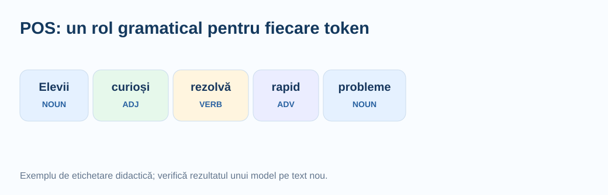
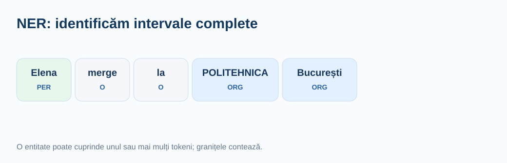
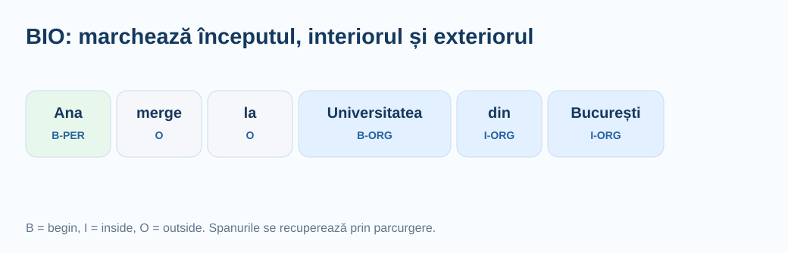
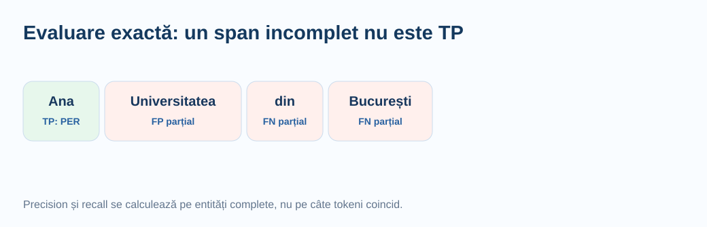

De la structura gramaticală a propoziției la extragerea unor informații organizate. Explicații accesibile elevilor de liceu, comparații vizuale, cod Python de la zero și exemple cu spaCy, Stanza și scikit-learn.
Adnotezi și interpretezi categorii gramaticale, identifici entități și pozițiile lor, calculezi metrici, extragi caracteristici și integrezi informația lingvistică într-un clasificator.
Python, collections, re, spaCy, Stanza (POS/lematizare), DictVectorizer, TfidfVectorizer și Pipeline.
Un clasificator de text bazat numai pe cuvinte poate funcționa foarte bine, dar uneori pierde informații structurale: nu știe explicit care cuvânt este verb și care este substantiv, unde începe un nume de instituție sau la ce se referă un număr. POS tagging și NER adaugă un strat de interpretare a textului.
POS răspunde la întrebarea „ce rol gramatical are fiecare token?”. NER răspunde la întrebarea „care secvențe de tokeni desemnează entități și de ce tip?”. Ele nu fac același lucru. În expresia „Universitatea Politehnica București”, un analizor POS poate furniza categorii pentru fiecare cuvânt, iar NER poate identifica întregul grup drept o singură entitate de tip organizație.
La olimpiadă, aceste rezultate pot fi caracteristici suplimentare pentru clasificare, pași de preprocesare pentru căutare, extragerea de informații din documente sau baze pentru analiza de erori. Ele nu sunt, de regulă, o condiție obligatorie pentru orice problemă de text.
Folosește POS/NER numai dacă există un motiv legat de sarcină și poți verifica impactul pe date de validare independente.
Un token este o unitate produsă de un tokenizer. În spaCy, punctuația poate fi un token separat. O propoziție este o secvență de tokeni, iar lemma este forma lexicală de bază estimată, de exemplu citeau → citi (rezultatul exact depinde de model).
UPOS reprezintă o categorie gramaticală universală, precum NOUN, VERB sau ADJ. XPOS este o etichetă gramaticală mai detaliată, specifică resursei lingvistice. Morfologia include informații precum număr, gen, caz, persoană sau timp. Entitatea este o secvență continuă de text, identificată prin poziții și un tip.
Este util să distingi și entitate de valoare obișnuită: „2026” poate reprezenta un an și poate fi recunoscut ca dată în anumite scheme, dar nu orice număr este o entitate în toate corpusurile. Etichetele exacte depind de modelul și schema de adnotare.
| Element | Exemplu | Reprezentare tipică |
|---|---|---|
| Token | „București” | Token.text |
| POS | substantiv propriu | Token.pos_ == "PROPN" |
| Lemma | formă de bază | Token.lemma_ |
| Morfologie | gen, număr etc. | Token.morph |
| Entitate | „POLITEHNICA București” | Span.text, Span.label_ |
| Offset | caracterele ocupate de span | Span.start_char, Span.end_char |
Considerăm propoziția „Elevii curioși rezolvă rapid probleme.”. Dorim să stabilim categoria fiecărui token. Identificăm mai întâi cuvintele și punctuația, apoi folosim contextul: „rezolvă” este verb, „curioși” este adjectiv, „rapid” este adverb, iar „Elevii” este substantiv.
De ce context? Cuvântul „nou” poate fi adjectiv în „manual nou” sau adverb în „citesc din nou”. Aceeași secvență de caractere nu are neapărat aceeași etichetă în toate propozițiile.
Într-un model statistic, etichetele sunt estimate pe baza exemplelor observate la antrenare. Prin urmare, o propoziție cu expresii rare, nume proprii ori greșeli de tastare poate primi etichete incorecte.
| Token | Categorie didactică | UPOS uzual | Explicație |
|---|---|---|---|
| Elevii | substantiv | NOUN | denumește un grup de persoane |
| curioși | adjectiv | ADJ | caracterizează substantivul |
| rezolvă | verb | VERB | descrie acțiunea |
| rapid | adverb | ADV | caracterizează acțiunea |
| probleme | substantiv | NOUN | obiectul acțiunii |
| . | punctuație | PUNCT | semn de punctuație |

SpaCy oferă etichete gramaticale universale prin token.pos_. Schema Universal Dependencies este utilă pentru că aceeași familie de etichete se regăsește în multe limbi. Nu trebuie învățate ca abrevieri izolate: fiecare etichetă descrie un rol lingvistic.
Important: AUX indică verb auxiliar, DET este determinant, ADP include prepoziții, CCONJ este conjuncție coordonatoare și SCONJ conjuncție subordonatoare. Diferența poate conta atunci când extragem anumite tipare.
| UPOS | Rol | Exemplu orientativ |
|---|---|---|
| NOUN | substantiv comun | elev, manual |
| PROPN | nume propriu | București, Ana |
| VERB | verb lexical | citește, studiază |
| AUX | verb auxiliar | a în „a citit” |
| ADJ | adjectiv | interesant, clar |
| ADV | adverb | repede, aici |
| PRON | pronume | eu, el |
| DET | determinant | acest, o |
| NUM | numeral | două, zece |
| ADP | adpoziție/prepoziție | în, din |
| CCONJ | conjuncție coordonatoare | și, sau |
| SCONJ | conjuncție subordonatoare | dacă, deoarece |
| PART | particulă | particule (în funcție de limbă) |
| INTJ | interjecție | vai, oh |
| PUNCT | punctuație | ., ! |
| SYM | simbol | simboluri speciale |
| X | alte elemente | fragmente neclasificate |
Etichetele concrete se verifică în ieșirea modelului. Cuvintele românești pot fi ambigue, iar exemplele din tabel sunt ilustrative.
token.pos_ răspunde la întrebarea „ce categorie largă?”. token.tag_ poate oferi o etichetă mai detaliată, dependentă de model. token.morph poate include caracteristici precum Number=Plur, Gender=Fem sau Tense=Past, dacă acestea sunt atribuite de model.
Într-o problemă despre stilul documentelor, numărul verbelor sau proporția adjectivelor pot fi caracteristici numerice. Într-o problemă despre identificarea cerințelor, raportul dintre verbe și substantive poate avea un rol diferit. Nu presupunem că aceste trăsături sunt întotdeauna mai informative decât un baseline TF-IDF.
Pentru propoziția „Elevii au rezolvat două probleme”, caută în rezultatul modelului etichetele celor două forme verbale și ale numeralului. Compară pos_, tag_ și morph; observă dacă modelul distinge verbul auxiliar de verbul lexical.
Un sistem bazat pe reguli ar putea eticheta orice cuvânt terminat în „-mente” drept adverb; în română asemenea reguli nu sunt suficiente. Un model preantrenat a văzut multe exemple etichetate și estimează eticheta ținând cont de vecinătatea tokenului și de tipare învățate. Nu este un dicționar perfect.
În practică, separăm regula demonstrativă de predicția modelului. În simulator, modul „Adnotare didactică” folosește exemple cu etichete prestabilite, iar pentru text nou regulile simple sunt marcate ca euristici. Predicțiile autentice sunt obținute în Python cu un model antrenat spaCy ori Stanza.
Nu prezenta ieșirea unei funcții regex drept POS tagging statististic ori NER. O regulă poate detecta tipare, dar nu „înțelege” în general rolul gramatical.
Modelul ro_core_news_sm include componente pentru tokenizare, POS, analiză sintactică, lematizare și NER. După instalarea bibliotecii și a modelului, putem procesa un text într-un singur apel nlp(text). Important este să inspectăm nlp.pipe_names, nu să presupunem ce conține orice model.
Modelele sm, md și lg diferă ca resurse și mărime; un model mai mare poate îmbunătăți anumite rezultate, dar nu garantează performanță superioară pe toate domeniile. Pentru materiale de liceu, ro_core_news_sm este un punct de pornire accesibil.
# Rulați separat în terminal: # python -m pip install spacy # python -m spacy download ro_core_news_sm import spacy nlp = spacy.load("ro_core_news_sm") print("Componente:", nlp.pipe_names) print("Etichete NER:", nlp.get_pipe("ner").labels) doc = nlp("Elevii studiază în București.") for tok in doc: print(tok.text, tok.pos_, tok.lemma_)
Primele două linii sunt comenzi de instalare pentru terminal, nu instrucțiuni Python; în notebook se pot rula într-o celulă de tip shell precedată de !.
Parcurgem obiectul Doc token cu token. Pentru fiecare token afișăm textul, categoria universală, eticheta detaliată, lema și atributele morfologice. Codul nu forțează un rezultat prestabilit; tocmai asta permite compararea cu propriile presupuneri gramaticale.
Fiindcă elementele au lungimi diferite, formatăm coloanele folosind f-string. Acest lucru este util și pentru depanare: putem descoperi tokenizări neașteptate sau etichete care diferă între versiuni ale modelului.
import spacy nlp = spacy.load("ro_core_news_sm") text = "Elevii curioși au rezolvat două probleme dificile." doc = nlp(text) for tok in doc: print(f"{tok.text:<14} {tok.pos_:<7} {tok.tag_:<12} " f"{tok.lemma_:<16} {str(tok.morph)}")
Stanza oferă un flux lingvistic bazat pe Universal Dependencies. La nivelul acestei lecții folosim explicit tokenize,pos,lemma, care returnează cuvinte, etichete UPOS/XPOS, trăsături morfologice și leme. Nu cerem automat ner pentru limba română: disponibilitatea unui model NER diferă între limbi și versiuni.
În Stanza, Document.sentences conține propoziții, iar sentence.words elemente cu câmpuri precum text, upos, xpos, feats și lemma. Acestea pot fi inspectate sau agregate pentru caracteristici.
# Instalare: python -m pip install stanza # O singură dată în Python: stanza.download("ro") import stanza nlp = stanza.Pipeline("ro", processors="tokenize,pos,lemma", use_gpu=False) doc = nlp("Elevii au citit manualul și au rezolvat exercițiile.") for sent in doc.sentences: for word in sent.words: print(word.text, word.upos, word.xpos, word.lemma, word.feats)
Din etichetele unui document se pot construi caracteristici simple, de exemplu nr_verbe, nr_adjective, proportie_substantive și lungime_medie_token. Aceste caracteristici pot fi utile pentru clasificarea genului unui text, a complexității lingvistice sau a stilului.
Dar scorul se poate înrăutăți când modelul de POS greșește pe mesaje scurte sau pe un domeniu nou. Trebuie comparat un baseline TF-IDF cu varianta în care adăugăm informația POS, folosind aceeași validare.
from collections import Counter import spacy nlp = spacy.load("ro_core_news_sm") def caracteristici_pos(text): doc = nlp(text) cuvinte = [tok for tok in doc if not tok.is_space and not tok.is_punct] categorii = Counter(tok.pos_ for tok in cuvinte) n = max(len(cuvinte), 1) return { "nr_tokeni": len(cuvinte), "nr_verbe": categorii["VERB"], "nr_adjective": categorii["ADJ"], "proportie_substantive": (categorii["NOUN"] + categorii["PROPN"]) / n } print(caracteristici_pos("Elevii curioși rezolvă probleme dificile."))
Named Entity Recognition (NER) localizează secvențe de text care desemnează entități precum persoane, organizații, localități ori date, în funcție de schema modelului. Nu identifică doar cuvinte izolate: „Universitatea Națională de Știință și Tehnologie” poate forma o singură entitate, alcătuită din mai mulți tokeni.
Două cerințe trebuie satisfăcute simultan: granițele secvenței trebuie să fie corecte, iar tipul să fie corect. Dacă sistemul extrage „București” din „POLITEHNICA București” și îl etichetează LOC în loc de o organizație, nu a recuperat entitatea dorită chiar dacă unul dintre cuvinte pare corect.

Etichetele nu sunt identice între toate modelele. Verifică nlp.get_pipe("ner").labels pentru modelul instalat.
În corpusuri obișnuite întâlnim frecvent tipuri precum PER/PERSON (persoană), ORG (organizație) și LOC/GPE (localitate sau regiune geopolitică). Alte scheme pot include DATE, EVENT, PRODUCT, MONEY ori alte categorii. Nu există o singură listă universală pentru toate limbile și toate modelele.
Dincolo de etichetă, contextul schimbă interpretarea: „Apple” poate însemna o companie sau un fruct; „Paris” poate fi localitate sau nume de persoană. NER nu este echivalent cu căutarea expresiilor scrise cu majusculă. Multe entități sunt formate din mai multe cuvinte, iar unele nume pot apărea cu litere mici.
| Tip orientativ | Ce indică | Exemplu | Observație |
|---|---|---|---|
| PER / PERSON | persoană | „Ana Ionescu” | numele poate fi compus |
| ORG | organizație | „POLITEHNICA București” | granițele contează |
| LOC / GPE | loc | „București” | GPE apare în alte scheme |
| DATE | dată calendaristică | „29 octombrie” | nu toate modelele au DATE |
| PRODUCT | produs | „Modelul X200” | categoria depinde de corpus |
Atunci când procesăm doc = nlp(text), entitățile recunoscute sunt disponibile în doc.ents. Fiecare entitate este un obiect Span cu text, label_, start_char și end_char. Indicii de caractere permit recuperarea exactă a secvenței din textul original.
Offseturile sunt foarte importante pentru extragerea de informații, evidențierea automată într-un document, evaluare și înlocuirea entităților. Dacă două modele tokenizează diferit, offseturile la nivel de caractere pot oferi o modalitate comună de comparație.
import spacy nlp = spacy.load("ro_core_news_sm") text = "Elena merge la București și vizitează POLITEHNICA București." doc = nlp(text) for ent in doc.ents: print(ent.text, ent.label_, ent.start_char, ent.end_char) assert text[ent.start_char:ent.end_char] == ent.text
Pentru a reprezenta entitățile la nivel de token folosim frecvent schema BIO: B-ORG înseamnă începutul unei entități organizație, I-ORG continuarea aceleiași entități, iar O indică faptul că tokenul nu aparține unei entități.
În propoziția „Ana merge la Universitatea din București”, un set de adnotări didactice poate marca „Ana” drept B-PER și secvența „Universitatea din București” drept B-ORG I-ORG I-ORG. Acest exemplu este o adnotare ilustrativă, nu un rezultat garantat al vreunui model.
De ce contează BIO? Pentru că două entități alăturate de același tip nu trebuie unite. De asemenea, un I-ORG fără un început valid cere atenție la validarea secvenței.

Algoritmul este unul de parcurgere: ținem evidența tipului entității curente și a listei de tokeni care o compun. La un marcaj B-* începe o nouă entitate, la I-* continuăm una compatibilă, iar la O închidem entitatea curentă. Într-un proiect real trebuie să stabilim și comportamentul pentru secvențe invalide.
Decodarea din BIO în spanuri nu este un model în sine. Este un pas determinist de postprocesare, folosit pentru a obține entități complete și a le evalua corect.
def extrage_entitati(tokeni, etichete): rezultat = [] inceput, tip_curent = None, None for i in range(len(tokeni) + 1): eticheta = etichete[i] if i < len(tokeni) else "O" prefix, _, tip = eticheta.partition("-") continua = (prefix == "I" and tip == tip_curent) if inceput is not None and not continua: rezultat.append((inceput, i, tip_curent, " ".join(tokeni[inceput:i]))) inceput, tip_curent = None, None if prefix == "B" or (prefix == "I" and not continua): inceput, tip_curent = i, tip return rezultat tokeni = ["Ana", "merge", "la", "Universitatea", "din", "București"] etichete = ["B-PER", "O", "O", "B-ORG", "I-ORG", "I-ORG"] print(extrage_entitati(tokeni, etichete))
Pentru a interpreta forme incorecte I-* fără un început, exemplul pornește un span nou. În competiții trebuie să documentezi explicit această convenție.
Afișarea nu schimbă predicțiile. Ea este doar un instrument de inspecție. În proiecte reale este utilă pentru examinarea granițelor, mai ales la organizații sau nume de persoane compuse.
from pathlib import Path import spacy from spacy import displacy nlp = spacy.load("ro_core_news_sm") doc = nlp("Elena a studiat în București la POLITEHNICA București.") pagina = displacy.render(doc, style="ent", page=True) Path("entitati.html").write_text(pagina, encoding="utf-8") print("Deschide entitati.html în browser.")
Într-un corpus cu sute sau mii de știri, putem calcula frecvența entităților de tip ORG, orașele cel mai des menționate și distribuția persoanelor menționate. Aceste statistici pot sprijini analiza exploratorie și crearea unui index de căutare.
La prelucrarea mai multor documente, nlp.pipe() este de obicei mai eficient decât apelarea repetată individuală nlp(text). Prin batch_size controlăm numărul de texte procesate pe lot și putem evita consumul inutil de memorie.
from collections import Counter import spacy nlp = spacy.load("ro_core_news_sm") texte = [ "POLITEHNICA București organizează un concurs.", "Elevii au vizitat București în octombrie.", "Universitatea din București găzduiește o conferință." ] frecvente = Counter() for doc in nlp.pipe(texte, batch_size=16): for ent in doc.ents: frecvente[(ent.label_, ent.text)] += 1 for cheie, nr in frecvente.most_common(10): print(cheie, nr)
Înlocuirea unui nume cu [PERSOANA] poate fi utilă pentru un experiment NLP. Dar o astfel de mască nu garantează anonimizarea. Un model NER poate omite persoane, poate identifica greșit nume de produse sau poate lăsa indicii indirecte prin adrese, profesii ori combinații de date.
În exerciții lucrăm cu exemple fictive. Pentru date personale reale se aplică proceduri suplimentare, evaluarea riscului și verificare umană. Nu utilizăm automat un detector de entități ca singură măsură de protecție a datelor.
import spacy nlp = spacy.load("ro_core_news_sm") text = "Ana a trimis un mesaj către Universitatea din București." doc = nlp(text) rezultat = text for ent in sorted(doc.ents, key=lambda e: e.start_char, reverse=True): eticheta = f"[{ent.label_}]" rezultat = rezultat[:ent.start_char] + eticheta + rezultat[ent.end_char:] print(rezultat)
Sortarea descrescătoare după start_char păstrează valide offseturile entităților din stânga, chiar după înlocuiri.
Uneori vrem să recunoaștem exact câteva instituții, produse sau denumiri. Un sistem bazat pe reguli poate fi mai potrivit decât un model statistic, mai ales dacă lista este mică și stabilă. În spaCy, EntityRuler poate adăuga entități definite prin expresii ori tipare, inclusiv în combinație cu un model preantrenat.
Avantajul este controlul asupra tiparelor; dezavantajul este că entitățile neprevăzute și variațiile ortografice pot fi ratate. Combinația dintre reguli și NER învățat poate fi utilă în documente cu terminologie fixă.
import spacy nlp = spacy.blank("ro") ruler = nlp.add_pipe("entity_ruler") ruler.add_patterns([ {"label": "ORG", "pattern": "POLITEHNICA București"}, {"label": "ORG", "pattern": "Universitatea din București"} ]) doc = nlp("Elevii au vizitat POLITEHNICA București și Universitatea din București.") print([(ent.text, ent.label_) for ent in doc.ents])
Acesta este un detector bazat pe reguli, nu o predicție NER antrenată. Este util tocmai fiindcă putem controla exact expresiile recunoscute.
Pentru POS, o măsură uzuală este accuracy pe tokeni: numărul tokenilor etichetați corect împărțit la numărul total de tokeni. Dacă etichetele adevărate sunt [NOUN, VERB, ADV, NOUN] și modelul prezice [NOUN, VERB, ADJ, NOUN], accuracy este 3/4 = 75%.
Acuratețea globală poate ascunde probleme pe clase rare. Este util să examinăm și o matrice de confuzie POS sau rapoarte per etichetă, mai ales pentru perechi confuzabile precum NOUN/PROPN sau VERB/AUX.
from sklearn.metrics import accuracy_score, classification_report gold = ["NOUN", "VERB", "ADV", "NOUN", "ADJ", "VERB"] pred = ["NOUN", "VERB", "ADJ", "NOUN", "ADJ", "NOUN"] corecte = sum(a == b for a, b in zip(gold, pred)) print("Manual:", corecte / len(gold)) print("sklearn:", accuracy_score(gold, pred)) print(classification_report(gold, pred, zero_division=0))
La NER ne interesează entitățile complete, nu doar câți tokeni au fost marcați corect. Pentru o predicție considerată True Positive, în evaluarea exactă trebuie să coincidă începutul, sfârșitul și tipul entității. O entitate cu granița greșită poate deveni simultan FP și FN.
Definim precision = TP / (TP + FP), recall = TP / (TP + FN) și F1 = 2PR / (P + R). Dacă nu avem predicții sau entități adevărate, tratăm separat cazul împărțirii la zero.
Exemplu: referința conține două entități, iar sistemul prezice două, dintre care una singură are span și tip corect. Atunci TP=1, FP=1, FN=1, deci precision=recall=F1=0,5. Un scor bun pe tokeni poate coexista cu un F1 mai slab pe entități.

def evalueaza(gold, pred): gold, pred = set(gold), set(pred) tp = len(gold & pred) fp = len(pred - gold) fn = len(gold - pred) precizie = tp / (tp + fp) if tp + fp else 0.0 recall = tp / (tp + fn) if tp + fn else 0.0 f1 = 2 * precizie * recall / (precizie + recall) if precizie + recall else 0.0 return tp, fp, fn, precizie, recall, f1 gold = {(0, 1, "PER"), (3, 6, "ORG")} pred = {(0, 1, "PER"), (4, 6, "ORG")} print(evalueaza(gold, pred))
Erorile sunt mai informative decât un singur scor. Pentru POS verificăm termeni rari, ambiguitate morfologică, abrevieri, simboluri și texte fără diacritice. Pentru NER verificăm confuzia organizație/localitate, entități lungi, nume noi, ortografie inconsistentă și cazuri în care un nume este folosit cu sens comun.
Un proiect bun păstrează un tabel de erori cu coloanele: text original, eticheta adevărată, predicție, sursa erorii, strategie de remediere. Schimbările propuse trebuie apoi evaluate separat, nu introduse toate simultan.
| Problemă | Manifestare | Ce putem încerca |
|---|---|---|
| Ambiguitate POS | ADV confundat cu ADJ | mai mult context, comparație modele |
| NER parțial | „București” în loc de întregul ORG | analiza granițelor și a tokenizării |
| Nume rare | nume neidentificat | reguli controlate / exemplare noi |
| Text fără diacritice | grupări sau etichete instabile | normalizare alternativă verificată |
| Domeniu nou | model antrenat pe știri, testat pe mesaje | validare reprezentativă, adaptare a preprocesării |
POS și NER nu înlocuiesc neapărat TF-IDF. O abordare utilă este să păstrăm caracteristicile lexicale și să adăugăm un vector mic cu statistici lingvistice. În scikit-learn, FeatureUnion și ColumnTransformer pot combina transformări diferite; pentru un exemplu simplu putem porni de la DictVectorizer și scipy.sparse.hstack.
Pentru antrenare reproductibilă, transformările care învață parametri (vocabular, scalare etc.) trebuie ajustate numai pe train, preferabil în Pipeline. Predicțiile modelului lingvistic preantrenat pot fi extrase din toate textele, dar trebuie păstrată aceeași procedură, iar orice selecție dependentă de etichete trebuie făcută numai pe train.
from scipy.sparse import hstack from sklearn.feature_extraction.text import TfidfVectorizer from sklearn.feature_extraction import DictVectorizer from sklearn.linear_model import LogisticRegression texte = ["meci sportiv", "tenis finala", "cod python", "algoritm python"] y = [0, 0, 1, 1] extra = [ {"nr_verbe": 0, "nr_entitati": 0}, {"nr_verbe": 0, "nr_entitati": 0}, {"nr_verbe": 0, "nr_entitati": 0}, {"nr_verbe": 0, "nr_entitati": 0} ] # În aplicație, lista extra este calculată cu modelul POS/NER, # fără a folosi etichetele y. tfidf = TfidfVectorizer() vec = DictVectorizer() X_text = tfidf.fit_transform(texte) X_extra = vec.fit_transform(extra) X_total = hstack([X_text, X_extra], format="csr") model = LogisticRegression(max_iter=1000) model.fit(X_total, y) print("Număr caracteristici:", X_total.shape[1])
Acesta ilustrează combinarea matricilor. Valorile auxiliare sunt intenționat constante; în practică se calculează din POS/NER și se compară cu un baseline identic fără ele.
Exemplu de experiment reproductibil: clasificarea a 3–5 categorii de documente. Varianta A: TfidfVectorizer(ngram_range=(1,2)) + LogisticRegression. Varianta B: același baseline plus statisticile POS. Varianta C: aceleași caracteristici plus numărul entităților de fiecare tip. Nu schimbăm în același timp și modelul, și tokenizarea, și splitul.
Raportăm macro-F1, accuracy, F1 per clasă, mărimea vocabularului, timpul de procesare și 10 exemple de erori reprezentative. Repetăm experimentul cu un alt seed sau folosim cross-validation. Dacă noile caracteristici nu aduc îmbunătățire stabilă, păstrăm varianta mai simplă.
În contextul competiției, evaluarea locală trebuie să rămână separată de setul ascuns. O creștere a scorului public nu dovedește singură că modificarea este robustă. Notăm ipotezele și rezultatele, nu optimizăm orbește după leaderboard.
Cod reproductibil, CSV cu metrici, tabel cu ablații, exemple de eroare și un scurt raport de interpretare.
Nu există data leakage, etichetele POS/NER sunt coerente, textele noi sunt procesate identic, iar costul suplimentar este justificat.
POS poate fi util pentru clasificare de stil, căutarea de termeni gramaticali, filtrarea substantivelor dintr-un corpus sau construire de caracteristici lingvistice. NER poate ajuta la extragerea organizațiilor din știri, indexarea localităților, căutarea în documente și preprocesarea cu măști de entități.
Dar POS/NER pot fi inutile pentru un baseline simplu de sentiment, pot fi lente pe corpusuri foarte mari și pot fi instabile dacă domeniul este diferit de cel al modelului. Pentru informații sensibile, nu folosim niciodată NER ca singură protecție.
| Situație | Metoda de încercat | Atenție |
|---|---|---|
| Extragi instituții din știri | NER + reguli pentru nume cunoscute | verifică granițe și tipuri |
| Compari stilul a două genuri de text | număr / proporție POS | validare pe documente noi |
| Clasifici texte foarte scurte | mai întâi TF-IDF / n-grame caractere | POS/NER poate aduce prea puțin |
| Documente foarte tehnice | regex / EntityRuler + model | termeni din domeniu neacoperiți |
| Anonimizare automată | NER ca ajutor, verificare suplimentară | nu garantează eliminarea datelor personale |
POS produce o etichetă pentru fiecare token, iar NER produce intervale etichetate. Alege întotdeauna nivelul corect de evaluare: tokeni pentru POS, entități complete pentru NER. Un model preantrenat este un instrument util, dar rezultatele lui trebuie inspectate și validate pe datele tale.
Exemplele vizuale sunt educaționale. Modelul spaCy pentru română trebuie instalat pentru a obține rezultatele POS/NER reale; acestea pot diferi de adnotările demonstrative.